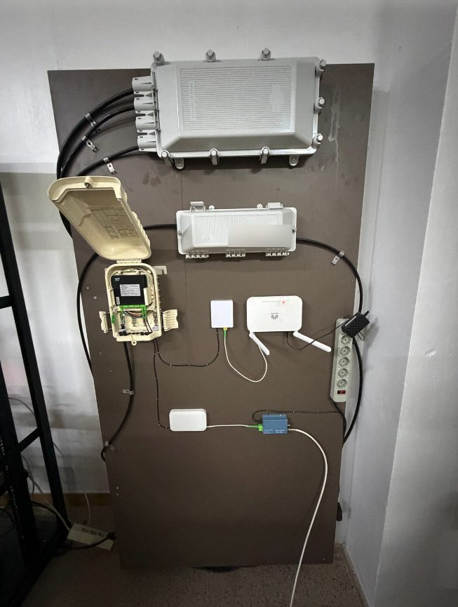
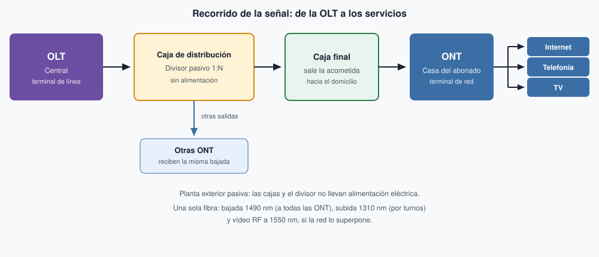

Redes FTTH/GPON¶
La fibra hasta el hogar (FTTH, Fiber To The Home) lleva la fibra óptica hasta el domicilio del abonado. Sustituye al coaxial de la acometida y a la red híbrida de fibra y coaxial (HFC, Hybrid Fiber-Coaxial), en la que la fibra acaba en un nodo de calle y el último tramo sigue siendo coaxial, con amplificadores que hay que alimentar y ajustar. El medio de una FTTH es la fibra monomodo del Tema 2: un solo modo de luz y distancias de kilómetros.
La planta exterior no lleva equipos activos. Los divisores solo parten la luz, así que no necesitan alimentación eléctrica ni ajustes de nivel. Al eliminar el cobre y esa alimentación desaparece una fuente habitual de averías del coaxial. El alcance también cambia: la UIT-T G.984.2 contempla hasta 20 km de fibra entre la central y el abonado. La distancia que de verdad se alcanza depende de las pérdidas; el ejemplo 2 hace esa cuenta. Con coaxial, de forma orientativa, el tramo útil se queda en unos 2 km en el mejor de los casos. La fibra admite más velocidad: en GPON, la bajada de referencia es de 2,5 Gbit/s y la subida de 1,25 Gbit/s, compartidas por los abonados de un mismo árbol. La evolución XGS-PON (10-Gigabit-capable Symmetric Passive Optical Network, UIT-T G.9807.1) llega a 10 Gbit/s en los dos sentidos y conserva la misma planta pasiva.
Esa arquitectura se llama GPON (Gigabit-capable Passive Optical Network, red óptica pasiva con capacidad de gigabit) y está descrita en la UIT-T G.984. De la central a la casa intervienen cuatro piezas:
- La OLT (Optical Line Terminal, terminal de línea óptica) está en la central. Genera la señal de bajada, recibe la de subida y asigna el turno de cada abonado.
- La red de distribución óptica es el conjunto de fibras y cajas que hay entre la OLT y el domicilio. En las cajas de distribución y en las cajas terminales o finales se colocan los divisores ópticos pasivos, con relaciones 1:8, 1:16, 1:32 o 1:64. El reparto puede hacerse en un solo divisor o en dos escalones, uno en cada caja.
- La acometida es el último tramo de fibra, desde la caja final hasta el domicilio.
- La ONT (Optical Network Terminal, terminal de red óptica) está en casa del abonado. La norma llama ONU (Optical Network Unit, unidad de red óptica) al equipo de usuario en general; en FTTH ese equipo es la ONT, y de ella salen internet, telefonía y televisión.
En el taller hay un panel con estas piezas montadas, que se trabajará en la sesión práctica.


Los dos sentidos viajan por una sola fibra, separados por longitud de onda (multiplexación WDM, Wavelength Division Multiplexing). La bajada va a 1490 nm, la subida a 1310 nm y, cuando la red superpone vídeo de radiofrecuencia (RF), ese canal va a 1550 nm junto con la bajada. Si la televisión va por IP, la longitud de 1550 nm puede no usarse. La bajada es de difusión: el divisor copia la misma luz hacia todas las ONT y cada una se queda con sus datos. La subida usa acceso múltiple por división en el tiempo (TDMA, Time Division Multiple Access): la OLT concede un turno a cada ONT para que no emitan a la vez sobre la fibra que comparten.
Ejemplo 1. Recorrido de la señal¶
La OLT inyecta la bajada a 1490 nm en la fibra que sale de la central. En la caja de distribución, el divisor pasivo reparte esa luz entre varias fibras. Una de ellas llega a la caja final del edificio o de la calle, y desde ahí la acometida entra en el domicilio hasta la ONT. La ONT convierte la luz en internet, telefonía y televisión. A la vuelta, la ONT transmite a 1310 nm solo durante su turno; el mismo divisor junta las subidas y las devuelve a la OLT. El resto de salidas del divisor llevan la misma bajada a otros abonados.


Ejemplo 2. Cálculo sencillo de pérdidas¶
Casi todo el margen se lo queda el divisor. En este ejemplo, la fibra, las fusiones y los conectores se cuentan con cifras orientativas de proyecto; el intervalo de la clase B+ sí lo fija la norma. Un divisor 1:32 se toma a 17 dB, valor típico de catálogo: solo repartir la luz entre 32 salidas ya ronda los 15 dB, y el divisor real añade un poco más. La fibra de planta se toma a 0,35 dB/km a 1310 nm, por debajo del máximo de 0,4 dB/km que la UIT-T G.652 asigna a la fibra monomodo de cable en esa longitud. Cada fusión bien hecha se cuenta a 0,1 dB y cada conector a 0,5 dB.
Se calcula la subida, a 1310 nm, porque ahí la fibra atenúa más que a 1490 nm. El enlace del ejemplo tiene 8 km, un solo divisor 1:32, cuatro fusiones y cuatro conectores:
| Concepto | Cálculo | Pérdida |
|---|---|---|
| Divisor óptico 1:32 | valor típico | 17 dB |
| Fibra de planta, 8 km a 1310 nm | 8 × 0,35 dB/km | 2,8 dB |
| 4 fusiones bien hechas | 4 × 0,1 dB | 0,4 dB |
| 4 conectores | 4 × 0,5 dB | 2,0 dB |
| Total | 22,2 dB |
La clase B+ admite entre 13 dB y 28 dB de pérdida, tanto a 1490 nm como a 1310 nm (UIT-T G.984.2, anexo A, tabla A.2). Por debajo de 13 dB llega demasiada potencia y el receptor puede saturarse; por encima de 28 dB la señal ya no basta. El total de 22,2 dB entra en ese intervalo: el enlace funciona. Hasta el máximo quedan 5,8 dB de margen (28 − 22,2).
Ese margen es el que se trabaja en el empalme por fusión. Si las cuatro fusiones quedaran en 1 dB en lugar de 0,1 dB, aportarían 4 dB en vez de 0,4 dB y el total pasaría a 25,8 dB. El enlace seguiría dentro, pero el margen bajaría a 2,2 dB. Unos empalmes defectuosos de más sacan el enlace de los 28 dB y la ONT deja de recibir nivel suficiente.
Errores frecuentes
Invertir bajada y subida: a 1490 nm la señal llega a todas las ONT; a 1310 nm cada ONT espera su turno. Tratar el divisor como un amplificador de coaxial: no se alimenta y no se ajusta. Sumar dos divisores cuando el reparto del ejemplo es uno solo. Dar por buena una fusión deficiente porque aún se mide algo de luz: cada décima de más sale del margen de 28 dB.
Actividades¶
-
AC 310 (RA3 // CE3a, CE3d // RA4 // CE4c // 3p). De la central a casa. Ordena estas piezas desde la central hasta el domicilio y escribe, para cada una, dónde está y qué hace en una frase:
ONT · divisor óptico · OLT · acometida · caja terminal
-
AC 311 (RA3 // CE3a, CE3d // RA4 // CE4c // 3p). Una fibra, dos sentidos
-
a. Completa la tabla:
Longitud de onda Sentido o servicio ¿Cómo se reparte? 1490 nm 1310 nm 1550 nm -
b. Indica si es verdadero o falso y corrige las falsas:
- La subida va a 1490 nm porque es la longitud que menos atenúa.
- En la bajada, cada ONT recibe solo sus datos porque el divisor los separa.
- En la subida, todas las ONT emiten a la vez y la OLT separa las señales.
- Si la televisión va por IP, la longitud de 1550 nm puede no usarse.
-
-
AC 312 (RA3 // CE3a, CE3d // RA4 // CE4c // 3p). ¿Llega la luz? Calcula la pérdida de subida (1310 nm) de cada enlace y di si está dentro de la clase B+ (13–28 dB). Si está dentro, indica el margen hasta 28 dB.
Usa los valores del Ejemplo 2: fibra 0,35 dB/km, fusión 0,1 dB, conector 0,5 dB, divisor 1:32 = 17 dB. Toma además 1:64 = 20,5 dB y 1:8 = 10,5 dB.
Enlace Fibra Divisor Fusiones Conectores A 12 km 1:32 6 4 B 12 km 1:64 6 4 C 2 km 1:8 2 2 Pregunta final: el enlace C tiene menos pérdida que los demás. ¿Por qué puede dar problemas?
-
AC 313 (RA3 // CE3a, CE3d // RA4 // CE4c // 3p). Parte de taller. Responde a cada situación en dos o tres líneas:
- Un compañero busca dónde enchufar el divisor de la caja terminal porque «la señal llega floja».
- Tras repetir las fusiones del Ejemplo 2, cada una mide 0,8 dB. La ONT sigue encendida. ¿Se da por bueno? Calcula la nueva pérdida total y el margen.
- Un vecino contrata GPON y le dicen que es «de 2,5 Gbit/s». Su árbol tiene un divisor 1:32. ¿Cuánto le tocaría si los 32 abonados descargaran a la vez? ¿Y con XGS-PON?
- Da dos ventajas de FTTH frente a HFC relacionadas con el mantenimiento de la planta exterior.
Para los siguientes
Para los cálculos, usa los valores del Ejemplo 2: fibra 0,35 dB/km a 1310 nm, fusión 0,1 dB, conector 0,5 dB y clase B+ entre 13 y 28 dB. Toma estos valores de divisor: 1:4 = 7,2 dB, 1:8 = 10,5 dB, 1:32 = 17 dB y 1:64 = 20,5 dB.
-
PR 314 (RA3 // CE3a, CE3d // RA4 // CE4c // 5p). Reparto en dos escalones. Una operadora reparte en dos escalones: un divisor 1:4 en la caja de distribución y un divisor 1:8 en cada caja terminal. El enlace hasta el abonado más lejano tiene 10 km, 6 fusiones y 4 conectores.
- ¿Cuántos abonados como máximo cuelgan de este árbol?
- Calcula la pérdida de subida y el margen hasta 28 dB.
- Calcula el mismo enlace con un solo divisor 1:32. ¿Qué opción pierde más?
- En la teoría se avisa de no «sumar dos divisores». ¿Contradice eso lo que has hecho en el apartado 2? Explícalo.
-
PR 315 (RA3 // CE3a, CE3d // RA4 // CE4c // 5p). ¿Hasta dónde llega?. Un enlace tiene un divisor 1:32, 6 fusiones y 4 conectores. Solo falta decidir la longitud de la fibra.
- Calcula la pérdida fija del enlace, es decir, todo menos la fibra.
- ¿Cuántos km de fibra caben como máximo para no pasar de 28 dB?
- La operadora exige dejar 3 dB de margen para futuras reparaciones. ¿Cuál es ahora la distancia máxima, redondeando hacia abajo?
- Repite el apartado 3 con un divisor 1:64.
- En el apartado 2 sale una cifra mayor de 20 km. ¿Qué límite manda entonces?
-
PR 316 (RA3 // CE3a, CE3d // RA4 // CE4c // 5p). Localiza la avería. Un árbol reparte en dos escalones: 1:4 en la caja de distribución y 1:8 en cada una de las cuatro cajas terminales. Para cada aviso, di en qué tramo está la avería y razónalo.
- Los 32 abonados se quedan sin servicio a la vez.
- Se quedan sin servicio los 8 abonados de un mismo edificio; el resto funciona.
- Solo un abonado se queda sin servicio.
- Un abonado tiene cortes. Su enlace debería perder 22,2 dB según el proyecto, pero se miden 29,1 dB. ¿Está dentro de B+? ¿Cuántos dB sobran? ¿Qué revisarías primero, la roseta y el latiguillo de casa o las fusiones de la caja de distribución? ¿Por qué?
-
PR 317 (RA3 // CE3a, CE3d // RA4 // CE4c // 5p). La ONT que no respeta su turno. En un árbol 1:32, una ONT averiada empieza a emitir sin parar a 1310 nm. Ocurre lo siguiente:
- Internet y telefonía caen en las 32 casas.
- La televisión, que en esta red va por vídeo RF, se sigue viendo en todas.
- ¿Por qué una sola ONT tumba internet a todo el árbol?
- ¿Por qué la televisión sigue funcionando?
- Si la televisión fuera por IP, ¿seguiría viéndose? Razónalo.
- Propón un método para encontrar la ONT culpable sin aparatos de medida.
-
PR 318 (RA3 // CE3a, CE3d // RA4 // CE4c // 5p). Dimensiona una urbanización. Una urbanización de 100 viviendas está a 6 km de la central. Cada enlace tendrá 4 fusiones y 4 conectores, con un solo divisor por árbol. Hay que elegir entre divisores 1:32 y 1:64.
- ¿Cuántos árboles (puertos de OLT) hacen falta con cada opción? ¿Cuántas salidas quedan libres?
- Calcula la pérdida y el margen con cada opción.
- En el peor caso (todos descargando a la vez), ¿cuánta bajada GPON le toca a cada abonado con cada opción? ¿Y con XGS-PON?
- La operadora quiere al menos 3 dB de margen y que nadie baje de 50 Mbit/s en GPON. ¿Qué opción eliges? Justifícalo.